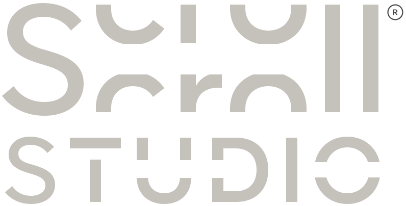
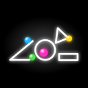

Musica dalla fisica
Crea i video virali delle palline che rimbalzano a tempo di musica, pronti per TikTok e Instagram.
Tocca per far cadere una pallina · disegna forme · premi ▶



BouncicalCrea i video virali delle palline che rimbalzano a tempo di musica, pronti per TikTok e Instagram.